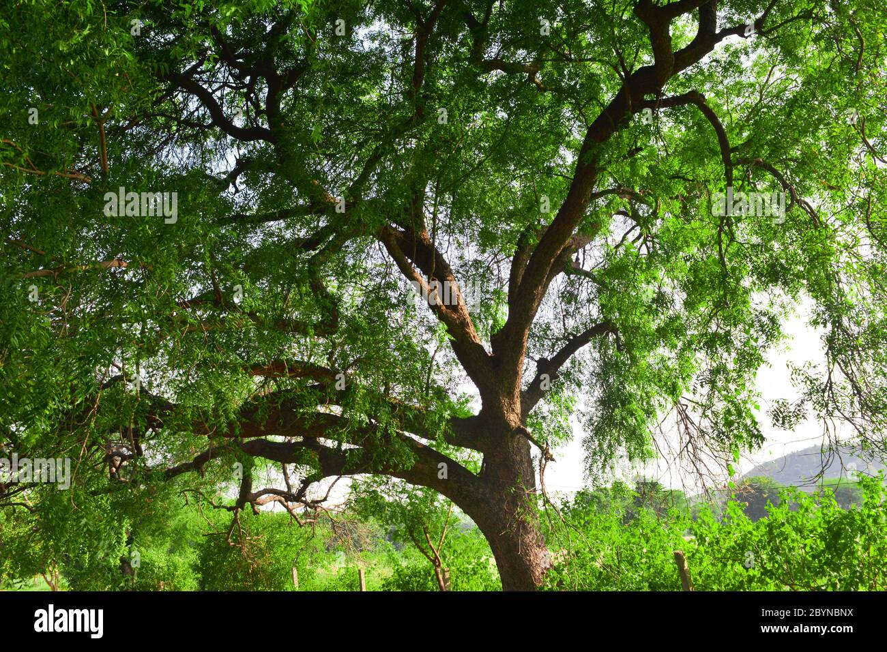

Go To Bottom
This is Trees 2 page
Topic 1Topic 2
Topic 3
Oak Tree
.jpg)
Oak : An oak is a tree or shrub in the genus Quercus (/ˈkwɜːrkəs/;[1] Latin "oak tree") of the beech family, Fagaceae. There are approximately 500 extant species of oaks.[2] The common name "oak" also appears in the names of species in related genera, notably Lithocarpus (stone oaks), as well as in those of unrelated species such as Grevillea robusta (silky oaks) and the Casuarinaceae (she-oaks). The genus Quercus is native to the Northern Hemisphere, and includes deciduous and evergreen species extending from cool temperate to tropical latitudes in the Americas, Asia, Europe, and North Africa. North America has the largest number of oak species, with approximately 160 species in Mexico of which 109 are endemic and about 90 in the United States. The second greatest area of oak diversity is China, with approximately 100 species.[3]
Neem Tree

Neem : Azadirachta indica, commonly known as neem, nimtree or Indian lilac,[3] is a tree in the mahogany family Meliaceae. It is one of two species in the genus Azadirachta, and is native to the Indian subcontinent and most of the countries in Africa. It is typically grown in tropical and semi-tropical regions. Neem trees also grow on islands in southern Iran. Its fruits and seeds are the source of neem oil.
polyalthia tree